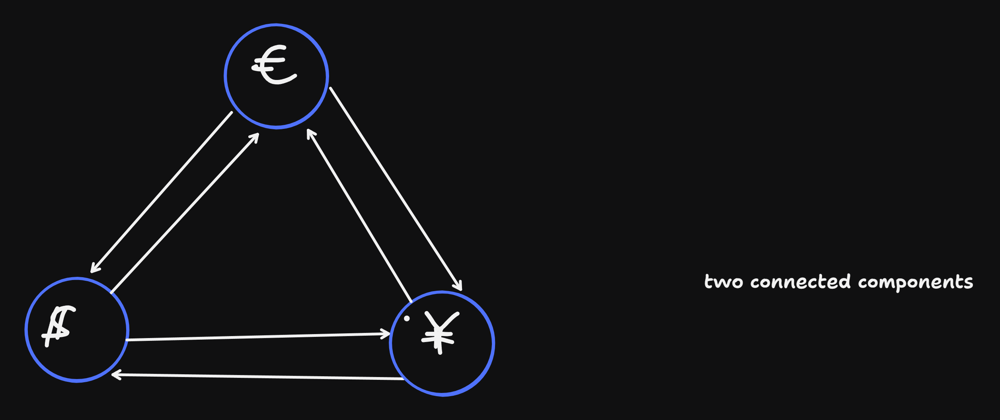
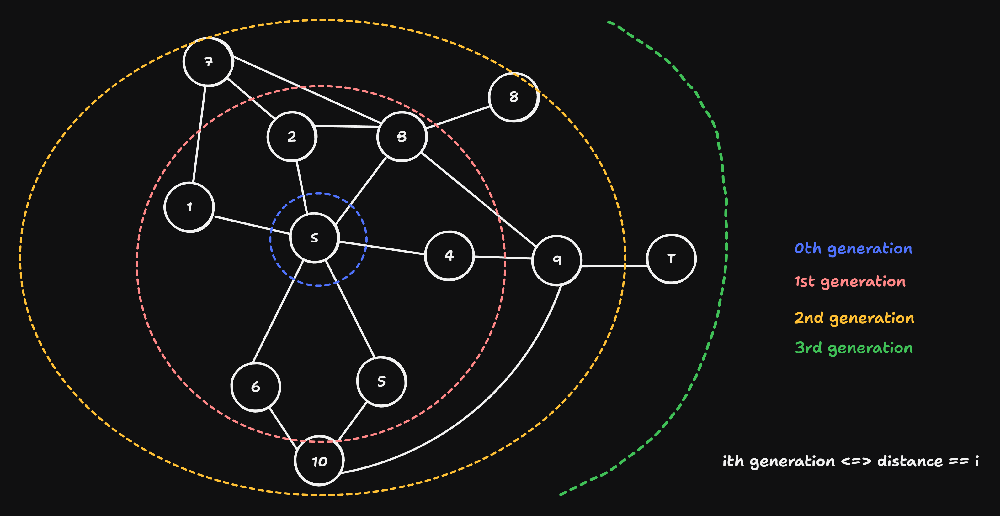

Week 13
VL 24 - 08.07.25
Connected Components
Searching and Identifying Connected Components
- Idea: each component has a label (a running number) and an anchor (representative of the equivalence class)
- Scan the nodes in increasing order, until a new anchor is found. This is a node whose connected component is not known
- DFS or BFS starting from an anchor, in order to find the other nodes in the equivalence class.
- Homework: Segmentation of a microscope image with connected components
- how to represent additional properties of nodes and edges?
visited[node]: was the node visited?anchor[node], label[node]: anchor and the label of the connected component to which the node belongsbrightness[node]: the brightness of a pixel- `distance[(node1, node2)]: shortest paths frmo node1 to node2
- above are called ‘property maps’ via containers like arrays, dictionaries. It is a lightweight approach. A separate property map for each property.
First we will look at the recursive version
def connected_component(graph) : # graph given as an adjecency list
labels = [None] * len(graph)
anchors = [None] * len(graph)
def visit(node, anchor):
if anchors[node] is not None: return # already visited / known component
labels[node] = labels[anchor]
anchors[node] = anchor
for neighbor in graph[node] :
visit(neighbor, anchor)
current_label = 0
for node in range(len(graph)) :
if labels[node] is not None: continue
labels[node] = current_label
visit(node, node) # a compnent is now complete
current_label += 1
return labels, anchorsProblem “Maximum Recursion Depth Exceeded” \(\Rightarrow\) a variant with iteration and a stack DS:
def connected_components(graph):
labels = [None] * len(graph)
anchors = [None] * len(graph)
current_label = 0
for node in range(len(graph)) :
if labels[node] is not None : continue
stack = deque() # from collections
stack.append(node)
while len(stack) != 0 :
new_node = stack.popright() # pop() in newer python
if labels[new_node] is not None: continue
labels[new_node] = current_label
anchors[new_node] = node
for neighbor in graph[new_node] :
if labels[neighbor] is not None: continue
stack.append(neighbor)
# end while: stack is now empty, DFS for the component is complete.
current_label += 1 # proceed to the next label
# end for: all components are complete
return labels, anchorsNext problem we will take on is shortest path
Shortest Path
- 3 types of SP problems:
- unweighted graph (ungewichtet): all edges are equally expensive: shortest path = the least number of edges \(\Rightarrow\) BFS
- weighted graph, all weights are positive (\(w_{uv}> 0\)), Path length = Sum of the weights \(\Rightarrow\) Dijsktra Algorithm, or A* algorithm
- weighted graph with arbitrary weights (positive and negative) \(\Rightarrow\) length = sum of weights. Danger of an infinite loop when the sum of weights of a cycle is negative. solution: Bellman-Ford Algorithm (this algorithm terminates when a negative cycle is detected)
Example: negative cycle in Arbtrage-companies:

what happens:
- we have x$,
- exhnage to Eu => y yen = \(w_{\$eu}\) x$.
- exchange to Yen => z yen = w_{eu, yen}w_{$,eu} x $
- exhnage to $ => w_{yen, \(} w_{eu, yen} w_{\), eu} x $
- there is profit when w1w2w3 > 1
- shortest paht: -log(x’) < -log(x) <=> -log(w1 * w2 * w3) < negative cycle
Now we need ne property maps for shortest paths. Each node knows it’s predecessor in the path \(\Rightarrow\) parents[node]
def shortest_path(graph, start, target): # graph is undirected
parents = [None] * len(graph)
parents[start] = start
queue = deque()
queue.append(start)
while len(queue) != 0 :
node = queue.popleft()
if node == target : break # success
for neighbor in graph[node] :
if parents[neighbor] is None :
parents[neighbor] = node
queue.append(neighbor)
if parents[target] is None :
return None # start & target are in the same connected component
path = [target]
while path[-1] != start : # not yet finished
path.append(parents[path[-1]])
path.reverse() # target not
return pathWhy doesn’t shortest path work with DFS?
VL 25 - 10.07.25
BFS (cont)
Why does BFS find the shortest path?
- undirected & unweighted graph

Obersvations:
- BFS expands / propagates in phases around the start node.
- BFS doesn’t only find the shortest path from start to target, but all shortest paths with length \(l < \text{length}(\text{start}\rightsquigarrow\text{target})\) (shortest paths to all nodes that are closer to start than the target)
Shortest Paths in Weighted Graphs (Dijkstra & A* - Alg)
- Edge weights represent the lenghts of edges \(w_{uv} > 0\)
- Property maps:
weights[(u,v)]with node pairs as keys
Alternatively adjacency matrix. Entries are weights of the edges:
\[ \begin{bmatrix} 0 & 4 & 7 \\ 4 & 0 & 2 \\ 7 & 2 & 0 \\ \end{bmatrix} \]
But we will use adjacency lists and property maps .
Idea: Replace the queue in BFS by a MinHeap (priority queue), where the priority of a node = length(start -> node). (in the lecture we had max heaps, but now we need a min heap - in python this is already the case in the module haepq ).
algorithm:
def dijkstra(graph, weights, start, target) :
parents = [None] * len(graph) #
heap = []
heapq.heappush(heap, (0.0, start, start)) # 0.0 = priority, start = current, start = parent
while len(heap) != 0 :
length, node, parent = heapq.heappop(heap)
if parents[node] is not None : continue
parents[node] = parent
if node == target: break # success
for neighbor in graph[node] :
if parents[neighbor] is not None: continue
new.length = length + weights[(node, neighbor)]
heapq.heappush(heap, (new_length, neighbor, node))
# end while
if parents[target] is None : return None, None
path = [target]
while path[-1] != start : path.append(parents[path[-1]])
path.reverse()
return path, lengthComplexity of Dijkstra Shorteste Path
while len(heap) != 0:
- In the
heapwe add edges, and we do not re-add edges multiple times. Therefore the number of iterations is \(\mathcal{O}(|E|)\)
heappop(): \(\log{len(heap)} \Rightarrow \mathcal{O}(|E|)\):
- in usual graphs (no multiedges): \(|E| \in \mathcal{O}(|V|^2) = \mathcal{O}(\log({|V|})\)
for neighbor: \(\mathcal{O}(degree(node)) \in \mathcal{O}(|V|)\)
\(\Rightarrow\) overall complexity: \(\mathcal{O}(|E|\log{|V|})\)
Correctness of Dijkstra Shortest Path
Lemma: in the (i + 1)-st iteration of the
while-Loop: \(length_{i + 1} \geq length_{i}\)Proof (indirect, proof by contradiction): asssume \(l_{i + 1} < l_i\) for some \(i\). This means that \(l_i\) was at the Top in the heap at the iteration \(i\), \(l_{i + 1}\) was at the top at the iteration \(i+1\)
- case 1: the path with the length \(l_{i+1}\) was already known during the iteration \(\Rightarrow\) \(l_i\) could not have been top \(\Rightarrow \quad \bot\)
- case 2: path of length \(l_{i + 1}\) was discovered during the itration \(i\). Then we have \(l_{i + 1} = l_i + W_{parent_i, node_i} > l_i\) \(\Rightarrow \quad \bot\) \(\Rightarrow l_{i + 1} < l_{i}\) is impossible.
Theorem: Dijstras response: \(node \rightarrow parent \rightsquigarrow start\) is the shortest path from \(node \rightsquigarrow start\), length \(l_D\).
True shortest path: \(node \rightarrow x \rightsquigarrow start\) with length \(l_N < l_D\) shows that is impssible via a contradiction. we know who \((l_{D}, node, parent)\) at the top of the heap is
- case 1: \(x \rightsquigarrow start\) is already in heap, if \(w_{node, x} + len(x \rightsquigarrow start) = l_w < l_D\), would have been already found in an earlier iteration \(\Rightarrow \quad \bot\)
- case 2: $x
Notes
from collections import deque
import heapq
# gl = [[1,2], [0,3,4], [0,3,5,6], [1,2], [1], [2], [2]]
# g_cycle = [[1, 2], [0, 2], [0, 1]]
# g_comp = [[1, 2], [0], [0], [4], [3]]
def transpose_graph(graph):
gt = [[] for _ in graph]
for node, neighbors in enumerate(graph):
for nbr in neighbors:
gt[nbr].append(node)
return gt
def dfs(g, u):
visited = set();
def visit(v):
if v in visited: return
visited.add(v)
print(f"discovered {v}")
for neighbor in g[v]:
visit(neighbor)
print(f"finished {v}")
visit(u)
def dfs_it(g, u):
s = deque()
s.append(u)
visited = set()
while s: # still node to be processed
node = s.pop()
if node in visited:
continue
visited.add(node)
print(f"discovered {node}")
for neighbor in g[node]:
if neighbor not in visited: # this line also can be omitted
s.append(neighbor)
def dfs_it2(g, start):
s = deque([start])
visited = {start} # mark root immediately
while s:
node = s.pop()
print(f"discovered {node}")
# reverse neighbors so the left-most neighbor is processed first
for neighbor in reversed(g[node]):
if neighbor not in visited:
visited.add(neighbor) # mark here (before pushing)
s.append(neighbor)
def bfs_it(g, u):
q = deque()
q.append(u)
visited = set()
while q: # still node to be processed
node = q.popleft()
if node in visited:
continue
visited.add(node)
print(f"discovered {node}")
for neighbor in g[node]:
if neighbor not in visited: # this line also can be omitted
q.append(neighbor)
def bfs_it2(g, u):
q = deque([u])
visited = {u}
while q:
node = q.popleft()
print("discovered", node)
for nbr in g[node]:
if nbr not in visited:
visited.add(nbr)
q.append(nbr)
def bfs_dp(g, start):
q = deque([start])
dist = {start: 0}
parent = {start: None}
visited = {start} # mark on enqueue
while q:
u = q.popleft()
# here u is being processed: dist[u] is its shortest distance
print(f"processing {u} dist={dist[u]}")
for v in g[u]:
if v not in visited:
visited.add(v)
parent[v] = u
dist[v] = dist[u] + 1
q.append(v)
return dist, parent
def dfs_dp(g, start):
visited = set()
q = deque([start])
dist = {start: 0}
parent = {start: None}
while q:
u = q.pop()
if u in visited: continue
visited.add(u)
print(f"processing {u} dist={dist[u]}")
for v in g[u]:
if v not in visited:
parent[v] = u
dist[v] = dist[u] + 1
q.append(v)
return dist, parent
def reconstruct_path(parent, start, target):
if target not in parent:
return None
path = []
node = target
while node is not None:
path.append(node)
if node == start:
break
node = parent[node]
if path[-1] != start:
return None # we reached None before hitting start -> unreachable node
path.reverse()
return path
def copy_dfs(g, u):
"""
copy the reachable component of `g` starting at `start` using DFS pre-order
Returns (new_adj, mapping) where mapping maps old_index -> new_index
"""
if u < 0 or u >= len(g):
return [], {}
mapping = {}
g_new = []
s = [u]
# assign start immediately (pre-order)
mapping[u] = 0
g_new.append([])
while s:
u = s.pop()
# iterate neighbors (natural order);
for v in g[u]:
if v not in mapping:
mapping[v] = len(g_new)
g_new.append([])
s.append(v)
g_new[mapping[u]].append(mapping(v))
return g_new, mapping
def dfs_delete(g, start):
"""
delete the reachable component of `g` starting at `start` using DFS post-order
- Deletion here means: clear g[u] and remove u frm adjacency lists of all other nodes
modifies g in-place. Returns list of deleted nodes (in the order they arrived)
"""
n = len(g)
visited = set()
deleted = []
def visit(u):
if u in visited:
return
visited.add(u)
for v in list(g[u]): # iterate a copy, because we will modify on deletes
visit(v)
# post-order: now delete u
# remove u from other adjacency lists
for w in range(n):
g[w] = [x for x in g[w] if x != u]
# clear u's adjacency list
g[u] = []
deleted.append(u)
visit(start)
return deleted
def has_cycle(g):
n = len(g)
visited = set()
def dfs(u, parent):
visited.add(u)
for v in g[u]:
if v == parent:
continue
if v in visited:
return True
if dfs(v, u): return True
return False
# explore graph from
return dfs(0, -1)
def connected_components_vl(graph) : # graph given as an adjecency list
labels = [None] * len(graph)
anchors = [None] * len(graph)
def visit(node, anchor):
if anchors[node] is not None:
return # already visited / known component
labels[node] = labels[anchor]
anchors[node] = anchor
for neighbor in graph[node] :
visit(neighbor, anchor)
current_label = 0
for node in range(len(graph)) :
if labels[node] is not None: continue
labels[node] = current_label
visit(node, node) # a compnent is now complete
current_label += 1
return labels, anchors
def connected_components_dfs(g):
n = len(g)
labels = [-1] * n
anchors = [None] * n
def dfs(u, anchor, cid):
"""
visit all nodes reachable from anchor,
assign them the component id `cid`, which is the label of the anchor
assign their anchor as `anchor`
"""
labels[u] = cid
anchors[u] = anchor
for nbr in g[u]:
if labels[nbr] == -1:
dfs(nbr, anchor, cid)
cid = 0
for s in range(n): # loop over all nodes
if labels[s] != -1:
continue
dfs(s, s, cid) # flood-fill component represented by s
cid += 1
return labels, anchors, cid
def connected_components_bfs(g):
n = len(g)
labels = [-1] * n
anchors = [None] * n
cid = 0
for s in range(n):
if labels[s] != -1:
continue
q = deque([s])
labels[s] = cid
anchors[s] = s
while q:
u = q.popleft()
for v in g[u]:
if labels[v] == -1:
labels[v] = cid
anchors[v] = s
q.append(v)
cid += 1
return labels, anchors, cid
def groups_from_labels(labels):
comps = {}
for i, c in enumerate(labels):
comps.setdefault(c, []).append(i)
# return components in label order
return [comps[c] for c in sorted(comps)]
def shortest_path_vl(g, start, target): # graph is undirected
"""
BFS on an unweighted (undirected) graph given as list-of-lists.
Returns a list [start, ..., target] for a shortest path, or None if unreachable
"""
n = len(g)
if not (0 <= start < n and 0 <= target < n):
return None
if start == target:
return [start]
parent = [-1] * n # -1 means undiscovered
parent[start] = start # root points to itself
q = deque([start])
while q:
u = q.popleft()
if u == target:
break # early exit: target reached
for v in g[u]:
if parent[v] == -1:
parent[v] = u
q.append(v)
if parent[target] == -1:
return None # unreachable
# reconstruct the path target -> ... -> start
path = [target]
while path[-1] != start:
path.append(parent[path[-1]])
path.reverse()
return path
## topological sorting
def topological_sort(g):
"""
input: `g` a directed acyclic graph with vertices numbered 0..n
output: a linear order of the vertices s.t. u appears before v in the linear
order
"""
n = len(g)
indeg = [0] * n #
# initialize in degree
for u in range(n):
for v in g[u]:
indeg[v] += 1
# holds nodes with in-degree 0
q = deque([v for v in range(n) if indeg[v] == 0])
order = []
while q:
u = q.popleft()
order.append(u)
for v in g[u]:
indeg[v] -= 1
if indeg[v] == 0:
q.append(v)
return order if len(order) == n else None
def dag_shortest_path(g, weight, s):
"""
`g`: a weighted directed acyclic graph represented as list of lists, where
nodes are indexed 0 .. len(g) - 1
`s`: start node
`weights`: mapping of edge -> weight
"""
n = len(g)
INF = float("inf")
shortest = [INF] * n
shortest[s] = 0
parent = [-1] * n
def relax(u, v):
if shortest[u] + weight[(u, v)] < shortest[v]:
shortest[v] = shortest[u] + weight[(u, v)]
parent[v] = u
order = topological_sort(g)
for u in order:
if shortest[u] == INF:
continue
for v in g[u]:
relax(u, v)
return shortest, parent
# g_top = [[1, 2], [2], [3, 4, 5], [4, 5], [5], []]
# weights = {(0, 1):5, (0,2):3, (1,2):2, (2,3):7, (2,4):4, (2,5):2, (3,4):-1, (3,5):1, (4,5):-2}
def dijkstra(g, weight, s):
"""
`g`: directed graph
`weight`: mapping of edge -> weight
`s`: start node
output:
- `dist`: for each non-source vertex v in V, dist[v] is the weight of
a shortest path from s to v and pred[v] is the vertex preceding on some shortest path
"""
n = len(g)
INF = float("inf")
dist = [INF] * n
dist[s] = 0
parent = [-1] * n
settled = [False] * n
def relax(u, v):
if dist[u] + weight[(u, v)] < dist[v]:
dist[v] = dist[u] + weight[(u, v)]
parent[v] = u
pq = [(0, s)]
while pq:
d, u = heapq.heappop()
if settled[u]:
continue
settled[u] = True
for v in g[u]:
nd = d + weight[(u, v)]
if nd < dist[v]:
dist[v] = nd
parent[v] = u
heapq.heappush(pq, (nd, v))
return dist, parent
def dijkstra_gpt(g, weights, start, target=None):
n = len(g)
INF = float("inf")
dist = [INF]*n
parent = [-1]*n
settled = [False]*n
dist[start] = 0.0
parent[start] = start
pq = [(0.0, start)]
while pq:
d, u = heapq.heappop(pq)
if settled[u]:
continue # stale entry for a node already finalized
settled[u] = True # first pop → distance to u is final
if target is not None and u == target:
break
for v in g[u]:
if settled[v]:
continue
nd = d + weights[(u, v)]
if nd < dist[v]:
dist[v] = nd
parent[v] = u
heapq.heappush(pq, (nd, v))
if target is None:
return dist, parent
if not settled[target]:
return None, None
# reconstruct path
path = []
x = target
while True:
path.append(x)
if x == start: break
x = parent[x]
path.reverse()
return path, dist[target]
def prim_mst(gw, start=0):
"""
gw: adjacency list where gw[u] = [(v, weight), ...] for an undirected graph.
Returns (edges, total_weight) where edges are (u, v, w) in the MST.
"""
n = len(gw)
INF = float('inf')
key = [INF] * n # cheapest edge weight connecting v into the tree
parent = [-1] * n # parent[v] = u that gives that cheapest edge
in_tree = [False] * n
key[start] = 0.0
pq = [(0.0, start)] # (key, vertex)
edges = []
while pq:
k, u = heapq.heappop(pq)
if in_tree[u]:
continue
in_tree[u] = True
if parent[u] != -1: # skip root (no incoming edge)
edges.append((parent[u], u, k)) # k == key[u]
for v, w in gw[u]:
if not in_tree[v] and w < key[v]:
key[v] = w
parent[v] = u
heapq.heappush(pq, (key[v], v))
total = sum(w for _, _, w in edges)
return edges, total